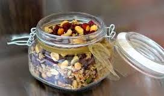

Trail Mix

Ingredients
- 1/2 cup cashews
- 1/2 cup almonds
- 1/2 cup peanuts
- 1/2 cup raisins
Instructions
- Take out all the ingredients and big jar
- Add the cashews, almonds, peanuts, raisins to a jar
- Close the lid
- Shake the jar aggressively up and down until everything is mixed
- Enjoy the trail mix! Perhaps even take it on a picnic!